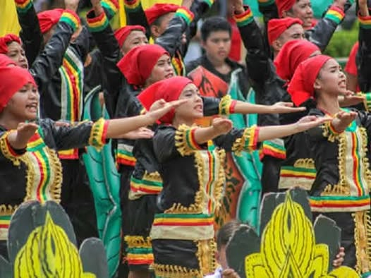
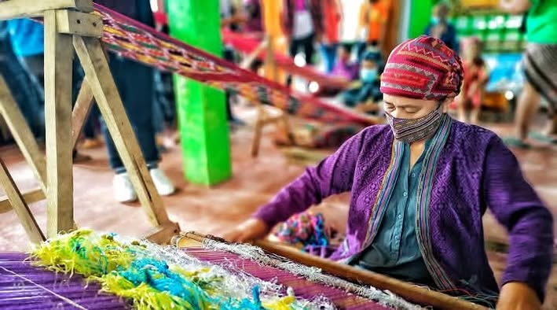
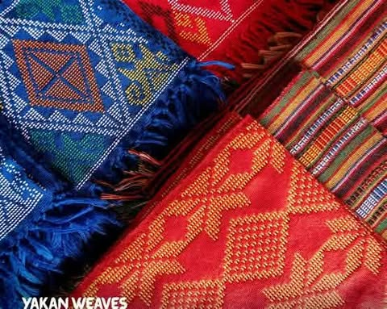

Hermosa Festival (Fiesta Pilar)
Celebrated annually in Zamboanga City on October 12 to honor the miraculous image of Our Lady of the Pillar (Nuestra Señora del Pilar). It features vibrant street dances, cultural shows, and the famous Regatta de Zamboanga, a colorful race of traditional vinta boats.

Buklog Ritual
The Buklog ritual is the grandest and most sacred tradition of the indigenous Subanen people across the Zamboanga Peninsula (Region 9). Inscribed on the UNESCO Intangible Cultural Heritage List, this elaborate thanksgiving system is held to appease spirits, express gratitude for a bountiful harvest, and restore community harmony.

Ambalang Ausalin
Ambalang Ausalin is a renowned Yakan master weaver and National Living Treasure (Gawad sa Manlilikha ng Bayan). She is recognized for preserving the traditional weaving practices of the Yakan community in Basilan, Philippines.

Yakan Traditional Weaving (Tennun)
Yakan weaving, locally known as tennun, is a complex art form meticulously kept alive by the indigenous Yakan community. Using a traditional backstrap loom, artisans spend weeks interlacing vibrant threads into bold, mathematical geometric patterns inspired by nature. These high-quality fabrics are highly prized and crafted into clothing, bags, and home decor.